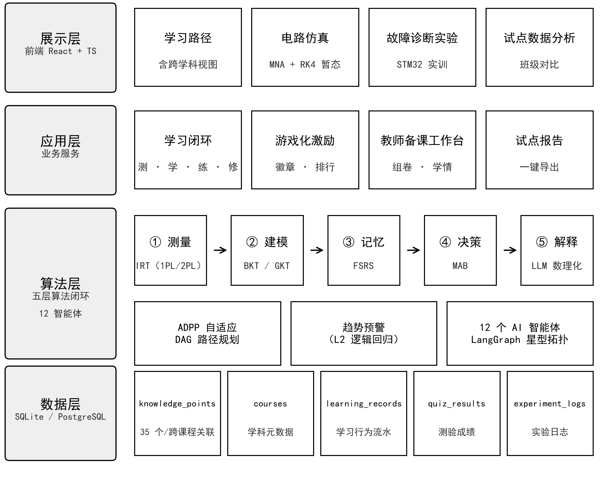

新工科课堂有三个老问题：学生基础参差却共用一份教案，实验设备有限且试错成本高，C 语言、电路、嵌入式三门课各教各的。LearnLab 用 12 个教育智能体协作应对：五层算法（IRT 测量→BKT/GKT 建模→FSRS 记忆→MAB 决策→大模型解释）为每个学生计算个性化学习路径与资源，浏览器端 MNA 电路仿真让实验随时随地零成本开展、AI 叠加故障诊断，并打通"编程思维→电路建模→嵌入式实现"跨课程链路。质量上有硬口径：算法专项断言 116 项全部通过，210 个路由冒烟 0 崩溃，24 个页面零 JS 错误；学生前后测对照试点正在进行。系统已在腾讯云上线（www.dreamlast.cn），机制可复用至同类工科课程。
本项目全称"基于大模型的个性化资源生成与学习多智能体系统（LearnLab）"，是新工科"计算机科学与技术 × 电子信息工程"跨学科 AI 学习平台，覆盖 C 语言程序设计、电路分析基础、STM32 嵌入式系统开发三门课程，由 2025 级马其瑞（队长，电子信息工程）、孙雨瑶（数据科学与大数据技术）、居欣月（遥感科学与技术）三名成员开发，分工见五（三）。
新工科的课堂里有几个绕不开的问题，先从最常见的说起。
（1）同一门课，两类学生，一份教案。C 语言的课堂上有编程基础的学生，也有零基础的学生，但他们面对的是同一份 PPT、同一组练习：基础好的在"炒冷饭"，基础弱的在追赶，两头都不舒服。超星、智慧树这类传统 LMS 平台只负责把资料挂到网上，并不做个性化推荐。一对一辅导的价值在研究界早有定论：布鲁姆 1984 年提出的"2 Sigma 问题"指出，一对一辅导能把学生成绩分布提升约两个标准差（Bloom, 1984）；VanLehn（2011）的元分析进一步显示，智能辅导系统的效果已经接近人类一对一辅导。剩下的难题是成本：怎么把这种辅导效果做成普通院校负担得起、可以规模化的系统。本作品立项的出发点就在这里。
（2）实验室排队两小时，上手十分钟。电路分析、嵌入式系统这类课离不开动手，但实验室有开放时间限制、设备数量有限，学生想多练几遍排不上队；硬件实验还有试错成本，接错线可能烧掉元件，学生不敢放开试。电子信息专业的学生，人均能动手的实验时长远远达不到教学需求。
（3）三门课各教各的，中间是断的。新工科强调"计算机+电子信息"的交叉融合，可课程体系仍把 C 语言、电路分析、嵌入式系统当三门孤立的课来讲。结果就是：学完 C 语言不知道位运算能用在寄存器配置上，学完电路分析也不清楚分压采样服务的是 ADC 采集。"编程思维→电路建模→嵌入式实现"这条链路，在传统教学里一直是断开的。
题库、教学视频、LMS 解决的是"内容怎么发出去"，下面几件事它们做不了：
这些恰恰是大模型、知识图谱、自适应算法、多智能体这类技术擅长的部分。
| 目标 | 学科环节 | 实现方式 |
|---|---|---|
| 个性化学习路径 | 自主学习 | ADPP 自适应 DAG 路径算法 + 6 维学习画像 |
| 智能辅导与错误诊断 | 教学实践 | 12 个 AI 智能体协作 + 苏格拉底式引导 |
| 虚拟实验实训 | 实验实训 | 浏览器端 MNA 电路仿真 + AI 故障诊断 + STM32 实验实训 |
| 跨学科链路打通 | 自主学习 | 跨课程知识关联 + 跨学科综合路径 + 综合实战项目 |
| 学情洞察与效果验证 | 教学管理 | 多因子趋势分析 + 试点数据分析报告 |
| 痛点 | 表现 | 传统方案局限 |
|---|---|---|
| 备课负担重 | 一位 C 语言教师面对 100-200 名学生，备课 2-4 小时、组卷 3-5 小时 | 手工制作，无法复用 |
| 学情滞后 | 依赖期中期末成绩，无法实时掌握班级薄弱点 | 数据采集成本高 |
| 批改低效 | 作业批改 15-30 分钟/份 | 人力瓶颈 |
| 痛点 | 表现 | 传统方案局限 |
|---|---|---|
| 设备受限 | 实验室开放时间有限、设备数量不足，无法随时练习 | 硬件资源刚性约束 |
| 试错成本高 | 硬件实验接线错误可能损坏器件，学生不敢反复尝试 | 无虚拟化替代 |
| 反馈缺失 | 实验现象异常时，无人解释"为什么"，学习停留在操作层面 | 仿真器只给数值 |
| 痛点 | 表现 | 传统方案局限 |
|---|---|---|
| 路径模糊 | 学生不清楚知识点依赖关系，学习顺序混乱 | 统一课程目录 |
| 辅导缺失 | 课后遇 Bug 无人即时解答，"黄金纠错期"（30 分钟）错过 | 答疑课以"天"计 |
| 反馈延迟 | 练习无即时反馈，错误理解固化 | 统一答案解析 |
上述痛点不是凭印象列的：前测问卷专设了"学习方式"与"学习中最大的困难"两道多选题（对应 2.3 自主学习痛点），随试点发放；试点的作答数据回收后，将以实测数字回填本节，与系统行为日志互相印证。
| AI 技术 | 解决的学科问题 | 落地功能（均已上线） |
|---|---|---|
| 大语言模型 | 即时辅导缺失、实验反馈缺失 | 苏格拉底式 AI 辅导、AI 电路分析、C 代码错误诊断 |
| 多智能体 | 教学流程碎片化 | 12 个教育角色智能体（LangGraph 编排）覆盖备课、学习、纠错、协作全流程 |
| 知识图谱+自适应算法 | 个性化缺失、路径模糊 | ADPP 自适应路径、跨课程知识关联、每日个性化练习 |
| 浏览器数值计算（MNA） | 实验设备受限 | 零成本虚拟电路实验，AI 叠加故障诊断 |
三大环节共 9 条痛点全部有已上线功能承接，不存在"分析了但没做"的需求；功能与数据流的验证口径见四（一），试点效果验证设计见六（三）。

| 技术 | 选型理由（与学科需求对应） |
|---|---|
| React 18 + TypeScript | 交互式实验实训界面（电路拖拽/仿真/可视化）需要高交互性能与类型安全 |
| Ant Design 5 | 教育工具的企业级组件体系，信息密度优先 |
| FastAPI + SQLAlchemy | 异步高性能 API，支撑 WebSocket 流式辅导 |
| LangGraph | 多智能体编排框架，星型拓扑匹配教育角色体系 |
| SQLite → PostgreSQL | 开发/试点轻量部署，可平滑迁移 |
| 讯飞星火/DeepSeek 等多模型 | 5 家 LLM 统一接口 + 自动降级，教学场景成本可控 |
12 个智能体按教育角色划分：课程设计师（Supervisor）、画像师、路径规划师、资源生成师、辅导助手五个核心角色负责主链路；知识图谱构建师、思维溯源师支撑知识体系；错误捕捉师负责代码分析；项目拆解师、角色匹配师、协作督导、成果评估师覆盖团队协作场景。智能体之间走标准化的 AgentMessage 通信协议，并带有反思循环（执行-评估-修正，最多 3 次，由 REFLECTION_ENABLED 配置启用，评审演示时可现场开启）。
平台没有沿用"加权平均分 + 规则阈值"的老办法，而是搭了一套五层算法闭环：测量 → 建模 → 记忆 → 决策 → 解释。每层都有经典文献出处，工程实现全部自研。
测量 — IRT 认知诊断（小样本自动 1PL，数据充分可选 2PL；文献 3-5）：学生能力 θ 替代加权平均分，题目难度 b 替代人工 1-5 分级。
建模 — BKT + GKT 知识追踪（pyBKT EM 估计，文献 1-2；可学习门控图卷积，文献 6-7）：逐知识点掌握概率按学生时间留出评估，指标可一键复现；图结构让邻居知识点的掌握状态影响当前点，传播增益 w≥0 保证单调可解释。
记忆 — FSRS 间隔重复调度（文献 9-11）：真实复习队列 + 记忆可提取性预警，把艾宾浩斯遗忘曲线工程化。
决策 — Thompson Sampling 多臂老虎机（文献 12-14）：用在三处——路径调整策略（回炉/强化/加速/维持，分数段候选集保底）、每日练习选题、资源匹配探索层。
解释 — LLM 教学化解释（自研封装）：把上述算法的输出转述成学生能听懂的辅导语言。
这些算法不是摆出来看的演示件，全部接进了业务链路。IRT θ 接入效果评估掌握度（Φ(θ)·100 百分位，mastery_detail 可溯源）；IRT b 接入 ADPP 学习成本模型与资源匹配难度适配（difficulty_source 可区分）；GKT 负责路径上的掌握度传播；MAB 挂在路径调整、选题、匹配三条链路上，收益还能闭环回传；FSRS 把到期知识点自动插到学习路径头部的复习阶段（review_source=fsrs_due 可溯源）。算法状态同时注入 tutor / error_catcher / resource_generator 三处智能体的 prompt（build_ai_engine_context 共享构建，静默降级）。趋势分析的 6 个因子权重不是人工拍的，由历史数据学习得到（L2 正则逻辑回归，标签取随后一周是否掉队/中断），输出掉队预警概率；样本不足时回退人工先验。
ADPP 的做法是把六样东西组合到一起：关键路径法（CPM）、BKT 掌握度、IRT 难度标定的六因子学习成本模型、加权拓扑排序、自适应阶段划分，以及 Thompson Sampling 动态调整策略，并扩展了跨课程依赖。举个实际的例子：目标知识点是 STM32 定时器 PWM，往前追前置依赖，一路经过 C 语言的位运算、指针，再往前是电路分析的电压波形，系统据此生成一条真正跨学科的学习路径。
输入过滤 → Prompt 加固 → 结构校验 → 代码校验 → 引用溯源 → LLM 自我纠错。其中①-⑤常驻主管线（apply_guards 规则守卫，零成本），⑥自我纠错随反思循环生效（REFLECTION_ENABLED 配置启用）。
学习行为、测验成绩、掌握度趋势、实验参与、功能使用五个维度的数据聚合后，可一键导出试点报告（Markdown），并支持班级对比（实验组 vs 对照组）。
对照"学科问题解决新方法、教学科研新模式、AI 技术应用新场景"三个层面，本作品的创新点及与同类做法的对比：
| 层面 | 创新点 | 与同类做法的对比 |
|---|---|---|
| 学科问题解决新方法 | 五层教育算法闭环（IRT 测量→BKT/GKT 建模→FSRS 记忆→MAB 决策→LLM 解释）与 ADPP 跨学科 DAG 路径规划，把"学什么、先学什么"从教师经验判断变成按认知数据计算 | 主流 AI 学习产品把大模型直接当问答器，没有认知建模层，答不了"为什么给这个学生推这个知识点"；本作品每条推荐可溯源到算法状态（mastery_detail、difficulty_source 等字段可查） |
| 教学科研新模式 | 12 个教育角色智能体覆盖备课、学习、实训、纠错、协作、学情全流程；教师端实时学情与试点报告把期末"经验总结"变成过程性"数据研究" | 传统 LMS 只负责内容分发，学情到期中考试才可见；市面智能辅导产品多聚焦单点答疑，不覆盖教学全环节 |
| AI 技术应用新场景 | 浏览器端 MNA+RK4 电路仿真叠加 AI 故障诊断；跨课程知识关联（C 语言→电路→嵌入式）生成跨学科学习路径；综合实战项目贯通三门课 | 传统仿真器只输出数值结果，不解释异常原因；同类学习平台多作用于单一课程，缺少跨学科链路 |
三个层面的共同基础是 AI 技术与学科特色的深度适配：算法层全部选用教育测量与学习科学的经典模型（IRT/BKT/GKT/FSRS 均有明确文献出处）而非通用推荐算法，内容层由电子信息工程专业成员把关学科正确性，场景层直接对应教学实践、实验实训、自主学习、教学管理四类真实环节。
全栈技术都是工业级开源方案（React / FastAPI / LangGraph），没有用不可控的黑盒组件。算法部分（ADPP 路径规划、IRT/BKT/GKT/FSRS/MAB 五层算法引擎、趋势权重学习器、MNA+RK4 电路求解器）全部源码在仓库内，公式与文献出处见附录参考文献。
团队技术能力与这套技术栈是对口的：队长为电子信息工程专业，课程训练覆盖 C 语言、电路分析、单片机开发，独立完成后端 39 个 API 模块与五层算法引擎的实现；全栈代码、测试脚本与部署运维均由团队自己完成（分工见五（三）），不存在"方案写得出来、代码拿不出来"的脱节。
测试方面，所有可复现脚本随仓库交付：算法层专项断言 116 项全部通过（覆盖 BKT/IRT/FSRS/MAB/GKT/NCD/时间留出评估/五层接线/趋势学习器/匹配探索/安全与接线加固）；API 全链路冒烟 38 项（用演示库真实数据训练 IRT/GKT/趋势学习器）；后端 210 个路由 0 崩溃，AIC 功能回归 29 项、数据流 23 项、Agent/LLM 专项 23 项全部通过；前端 E2E 49 个用例（7 个文件），MNA 数值验证 9/9（RC/RL/LC 对照教科书解析解）；前端构建 TypeScript + Vite 零错误。
可靠性这块是吃过亏才补齐的课：早期版本没配 LLM Key 时后端启动直接崩，后来加了降级兜底才稳住。现在是三层保障：5 家 LLM 自动降级链、LLM 故障时的业务降级（引导提示/本地图谱兜底）、限流与防幻觉/安全过滤。逻辑都不复杂，但演示现场最怕的就是这种低级故障。
部署形态也已经过真实环境验证：系统目前运行在腾讯云服务器（OpenCloudOS，2 核 4G）上，Nginx 反向代理 + HTTPS（Let's Encrypt 证书自动续期），后端由 systemd 托管并配置了内存上限与自动重启，日志层接入 journald 轮转。演示站点 https://www.dreamlast.cn 已稳定服务，最近一轮全系统测试期间 24 小时零 500 错误。
| 成本类别 | 明细 | 估算 |
|---|---|---|
| 一次性部署 | 云服务器（2核4G） | ¥1,500-2,000/年（学生优惠更低） |
| LLM API | 讯飞星火（教学场景，100 学生） | ¥300-500/月（开发者有免费额度） |
| 运维 | 学生团队志愿维护 + 开源工具 | ¥0 |
| 对比传统 | 电路实验室建设 | ¥50,000-200,000（仅设备） |
| 对比传统 | 商业 LMS 平台年费 | ¥30,000-100,000/年 |
算下来，LearnLab 单校部署年成本约 ¥5,000-8,000，比传统实验室和商业平台低一个量级，配合免费额度还能再压。
| 阶段 | 时间 | 内容 | 交付物 / 验收口径 |
|---|---|---|---|
| 需求分析与学科界定 | 第 1-2 周 | 学科痛点调研、学科定位（计算机+电子信息） | 需求分析文档；学科-环节-痛点清单（3 环节 9 条） |
| 系统架构设计 | 第 3 周 | 技术选型、架构分层、智能体角色设计 | 架构设计文档；12 智能体角色与 AgentMessage 协议定义 |
| 核心模块开发 | 第 4-10 周 | 12 Agent、ADPP 算法、MNA 仿真、前端体系 | 五层算法引擎与 ADPP 代码入库；MNA 求解器过解析解对照；前端页面全量可用 |
| 测试与优化 | 第 11-12 周 | E2E 测试、性能/安全测试 | E2E 49 用例、算法专项断言 116 项全绿；210 路由冒烟 0 崩溃 |
| AIC 功能增强 | 第 13-15 周 | 跨学科链路、故障诊断实验、试点数据采集、多模型降级 | 9 条跨课程关联上线；3 类电路故障实验；5 家 LLM 降级链 |
| 小规模试点 | 第 15-16 周 | 8 名学生（实验组 4 + 对照组 4）试用 + 前后测 + 问卷 | 前后测对比与试点数据分析报告（教师端一键导出） |
| 文档与提交 | 第 17 周 | 技术方案、测试报告、演示材料 | 全套参赛交付材料，验证脚本随源码可复现 |
三名成员来自三个专业，分别对应平台的三个核心侧面：马其瑞负责算法引擎与后端（电子信息工程的 C 语言、电路、嵌入式课程训练，保证电路与 STM32 内容的学科正确性），孙雨瑶负责试点数据与统计分析（数据科学训练保证效果验证可信度），居欣月负责可视化与文档交付（GIS 的空间可视化与制图训练直接用于 DAG 知识图谱与学情图表）。
| 成员 | 照片 | 专业方向 | 角色定位 |
|---|---|---|---|
| 马其瑞 队长 · 2025 级 |
电子信息工程 | 后端架构与教育算法引擎；学科内容正确性把关；生产环境部署运维 | |
| 孙雨瑶 2025 级 |
数据科学与大数据技术 | 试点组织实施与数据质量把关；功能与数据流测试验证 | |
| 居欣月 2025 级 |
遥感科学与技术（GIS 方向） | 前端页面与数据可视化开发；参赛材料排版与交付 |
各成员的模块划分、任务清单与完成情况如下。
电子信息工程专业的课程训练覆盖 C 语言、电路分析、单片机开发，与平台主打的"C 语言—电路—嵌入式"学科内容对口，因此由其承担技术底座与学科内容正确性两条线，共五个模块：
| 模块 | 具体任务 | 完成情况 |
|---|---|---|
| 系统架构 | FastAPI 分层后端（39 个 API 模块）与 SQLite 数据模型设计，覆盖学习、测验、诊断、协作、教师端全业务线 | 已上线运行；210 个路由冒烟测试 0 崩溃 |
| 教育算法引擎 | IRT/BKT/GKT/FSRS/MAB 五层闭环与 ADPP 路径规划引擎的实现、调参与离线评估 | 算法专项断言 116 项全部通过；按学生维度做时间留出评估，输出 AUC/LogLoss/Brier 及基线对照 |
| 智能体编排 | LangGraph 12 智能体调度、AgentMessage 通信协议、执行-评估-修正的反思循环 | 全部就位；反思循环最多 3 次、支持配置开关，评审时可现场演示 |
| 学科内容工程 | "C 语言—电路—STM32"课程内容与题库建设；浏览器端电路仿真 MNA 求解器；C 代码静态分析器 | MNA 数值验证 9/9，RC/RL/LC 结果与教科书解析解一致；错误捕捉覆盖典型语法与逻辑错误 |
| 生产部署运维 | 腾讯云部署（www.dreamlast.cn）、HTTPS 证书自动续期、进程守护、LLM 降级兜底 | 线上持续运行，提交前实测 24 小时零 500 错误；未配置 LLM Key 时自动降级，演示不中断 |
数据科学专业的训练核心是统计实验设计与数据清洗，对应平台"有没有效果、数据可不可信"的证据线，共五个模块：
| 模块 | 具体任务 | 完成情况 |
|---|---|---|
| 测评工具设计 | 前测试卷、后测试卷、学习体验问卷、知情同意书的编制 | 全套定稿，随试点材料交付 |
| 试点组织实施 | 招募电子信息专业大一学生 8 名，分实验组（SY01-SY04）与对照组（CK01-CK04）；制定前测→平台学习→后测→问卷的流程 | 试点于 9 月 26 日启动，两组学生按流程推进，行为数据自动落库 |
| 数据质量把关 | IRT/BKT 训练数据的清洗规则、作答有效性核验、匿名编号管理 | 清洗与核验规则定稿；试点数据回收后执行前后测对比与效度分析 |
| 功能测试验证 | AIC 功能回归 29 项、数据流 23 项、真实环境 HTTP 22 项的测试执行 | 全部通过；测试脚本随仓库交付，可一键复现 |
| 行为数据埋点 | 学习行为事件设计（观看/阅读/练习/复习/完成/跳过/重置），支撑学习时长与路径差异统计 | 已上线运行，行为流水自动落库 |
遥感科学与技术（GIS 方向）的专业核心是空间数据的组织与可视化表达，负责把算法输出转成学生与教师"看得懂、愿意用"的界面，共五个模块：
| 模块 | 具体任务 | 完成情况 |
|---|---|---|
| 学生端页面 | 学习中心、学习路径、AI 辅导、知识库、知识树、错题诊断、资源中心、个人空间等 10 个页面 | 全部完成；24 个页面逐页遍历零 JS 错误、零横向溢出 |
| 教师端页面 | 教学仪表盘、班级对比、学情预警、试点数据分析报告等 14 个页面 | 全部完成，试点报告支持一键导出 |
| 数据可视化 | 跨学科 DAG 知识图谱、学情趋势图表、排行榜、成就徽章墙 | 已上线；GIS 的空间布局与制图训练直接用于知识图谱的层次表达 |
| 交互质量保障 | 移动端适配、学习中心布局调优、新用户引导流程 | 前端 E2E 49 个用例（7 个文件）通过；构建 TypeScript + Vite 零错误 |
| 材料排版交付 | 技术方案 PDF 排版（md→HTML→PDF 管线）、佐证材料整理、源码包验收 | 已交付；系统运行佐证截图 13 张随材料提交 |
协作机制上，团队用 Git 版本控制（main 保护分支 + 提交审核）和任务看板管理，每周例会同步进度；跨专业模块之间靠 API 接口契约协作，前端按接口文档并行开发，数据侧按埋点口径独立取数，互不阻塞。三个专业各管一段，人员结构本身就贴合"AI 技术 × 学科场景"，也是对赛道"避免技术与学科场景脱节"要求的组织层面回应。
平台对学科核心环节的改善是可预期的，且每一项都设计了对应的验证方式，不以主观描述为准。
| 维度 | 预期效果 | 验证方式 |
|---|---|---|
| 学习效率 | ADPP 路径规划减少无效学习时间（预估 20-30%）：零基础学生不再面对超出能力的题目，有基础学生跳过已掌握内容 | 前后测对比 + 学习时长统计 |
| 个性化程度 | 画像驱动的资源/路径适配，同一个班里不同基础的学生拿到不同的学习顺序与资源 | 系统使用日志分析（路径差异率） |
| 实验实训 | 电路故障诊断正确率、实验完成度提升；虚拟环境试错零成本 | experiment_logs 统计 |
| 教师效率 | 备课与组卷从小时级降到分钟级，学情从期中滞后变为实时洞察 | 教师端使用记录 + 访谈 |
其中学习效率一项的来源要说明：ADPP 把学生按掌握度分配到不同的路径分支，减少的是"在已掌握知识点上重复练习"的时间；这部分节省随学生基础差异浮动，试点后会用实测数据修正预估。
试点平台已部署上线（https://www.dreamlast.cn，腾讯云 2 核 4G + Nginx + HTTPS）。材料都先行备齐：知情同意书、前后测问卷（微信小程序发放）、匿名编号规则。8 名电子信息专业大一学生（实验组 SY01-SY04、对照组 CK01-CK04）已招募到位，流程如下：
平台内置了一批能直接产出对照数据的验证点，试点期间自动落库，避免"只有代码验证、没有效果数据"：
| 对照点 | 传统方法 | 算法方法 | 可量化指标 | 当前状态 |
|---|---|---|---|---|
| 掌握度测量 | 最近 5 次加权平均分 | IRT θ 百分位（Φ(θ)·100） | 两口径逐生逐日差值、与后测成绩的效度相关 | 已接线，演示库 8 学生实测 |
| 路径成本 | 人工 1-5 难度分级 | IRT 标定 b 值连续插值 | 同知识点两来源耗时差、路径总时长变化 | 已接线，difficulty_source 可区分 |
| 知识追踪 | 无（画像快照） | BKT EM 估计 | 时间留出 AUC / LogLoss / Brier（并与最近正确率、多数类比较） | 已上线；小样本结果附置信区间与风险提示 |
| 掌握度传播 | 逐点独立 | GKT 图卷积传播 | 图感知掌握度 vs 逐点掌握度对后测的预测增益 | 已训练（可学习门控） |
| 记忆调度 | 统一间隔复习 | FSRS 个性化调度 | 到期知识点复习完成率、可提取性分布 | 已上线 |
| 路径调整策略 | 50/70/90 固定规则 | Thompson Sampling（规则先验冷启动） | strategy_source 分组的提分统计 | 已接线，收益闭环回传 |
| 选题与资源推荐 | 固定顺序/人工权重 | MAB 探索-利用 | 各臂收益曲线、资源类型点击/完成率 | 已接线 |
试点结束后，这七个对照点能回答两个问题：平台有没有用，以及效果来自哪一个算法环节。第二个问题更要紧，归因证据恰恰是同类产品普遍拿不出来的。
官方"效果验证依据"要求的四类证据，对应关系如下：教学试点数据（试点报告 + 前后测，收集中）、系统行为数据（learning_records/experiment_logs 自动落库，已就绪）、用户反馈（反馈问卷，随试点回收）、功能验证（上述 116 项断言与全路由冒烟，已完成）。四类证据中三类已就位，试点数据回收后即可形成完整的效果验证闭环。
本工作的核心创新集中在五点：
不足也有几处，如实说：试点数据仍在收集中，应用效果的真实学生量化验证待完善（对照实验设计已就绪，见第六部分）；学科内容目前覆盖 3 门课程，跨学科关联的广度待扩展；电路暂态分析面向线性 RLC 电路（状态变量法），含非线性元件/受控源的电路待扩展；趋势权重学习器依赖趋势快照积累（≥10 个样本方可训练），当前以人工先验权重兜底。
新工科的交叉融合还在深化，嵌入式、物联网方向的复合型人才缺口短期内看不到收窄的迹象，这是这套平台持续有用的前提。技术上值得跟进的有两件事：多模态大模型成熟后，电路仿真可以支持"看着波形图直接提问"的视觉化分析；Agent 框架演进到更自主的形态后，辅导智能体会更接近一名随时在场的助教。推广节奏不变：先把本校试点的效果做扎实，再谈省内推广与开放学科模板库（目标覆盖 10+ 学科）。
| 官方要求（三、作品要求 & 五、技术方案大纲） | 本方案对应位置 |
|---|---|
| 明确聚焦学科专业、界定领域场景 | 二（一）学科专业界定 |
| 学科需求分析报告 | 二（二）核心痛点梳理（教学/实验实训/自主学习三环节） |
| AI 技术应用方案 | （三）解决方案设计（架构/选型/核心模块） |
| 作品功能说明 | 《03_功能与验证报告》（学生端 9 模块 + 教师端 6 模块逐项说明）；一（二）核心目标表 |
| 效果验证依据 | 六、应用效果（算法对照设计 + 功能验证数据 + 试点方案） |
| 跨专业组队分工与协作机制 | 五（三）团队协作 |
| 创新点及对比传统方式优势 | 一（三）为什么必须用 AI；三（三）2 五层算法闭环；七（一）核心创新 |
| 推广价值与小规模试点案例 | 四（三）推广价值；六（二）试点方案 |
| 代码与模型（可复现性） | 八（二）代码与验证脚本 |
| 参考文献 | 八（三） |
| 学术伦理与知识产权 | 八（四） |
path_planning_dag.py — ADPP 自适应 DAG 路径规划（BKT/IRT/GKT/MAB 四路接线，策略 MAB 决策）irt_diagnoser.py — IRT 1PL/2PL MAP 联合估计（scipy BFGS）bkt_engine.py — pyBKT 完整贝叶斯知识追踪（EM 参数估计 + AUC 验证）gkt_engine.py — 可学习门控图卷积（自监督 MSE 训练，w≥0 单调约束）memory_scheduler.py — FSRS 间隔重复调度（复习队列/可提取性/持久化）bandit_selector.py — Thompson Sampling 选题器（mabwiser 封装）ncd_diagnoser.py — 神经认知诊断（numpy 向量化实现，单调约束）trend_analysis.py — 多因子趋势分析 + TrendWeightLearner 掉队预警学习器（L2 逻辑回归）weighted_matching.py — 多维加权匹配 + MAB 探索层effect_evaluation.py — 学习效果评估（IRT θ 掌握度 + FSRS 记忆小节）verify_ai_algorithms.py（算法断言）、evaluate_algorithms.py（按学生时间留出，输出 AUC/LogLoss/Brier/置信区间及基线对照）、verify_p0_wiring_api.py（38 项 API 全链路）、verify_aic_features.py（29 项回归）、verify_all_routes.py（210 路由冒烟）、verify_dataflow.py 等POST /algorithms/irt/fit、/algorithms/bkt/fit、/algorithms/gkt/train、/algorithms/trend/train（启动时自动拟合 BKT/IRT）教育算法（按五层闭环顺序）：
教育学与政策：
技术框架文档：
知识产权方面：平台代码全部自研，无知识产权争议；第三方组件均为开源许可（React/TypeScript/FastAPI/LangGraph 为 MIT，Ant Design 为 MIT，pyBKT 为 BSD-3，py-fsrs 为 MIT，mabwiser 为 BSD-3，NumPy/SciPy 为 BSD，Playwright 为 Apache-2.0）；LLM 服务通过官方 API 合规调用（讯飞星火/DeepSeek 等），不涉及模型权重分发。
教学内容与规范方面：课程知识的组织对齐现行课程教学大纲与主流教材体系（电路部分以邱关源《电路》（第 6 版）为参照，见参考文献 22），不复制受版权保护的教材原文；题库与讲义内容经电子信息工程专业成员核对，符合学科教学规范。学术伦理方面：试点数据采集遵循知情同意（试点前发放知情同意书），学生可随时退出；数据采集遵循最小化原则，仅采集学习行为、成绩、功能使用等教学必需数据，不采集个人敏感信息；学生数据仅用于本教学试点的效果分析，报告输出做匿名化与聚合处理；不将任何未实际发生的试点结果表述为已完成。
其他佐证材料：测试说明书（12 章，系统测试佐证）、试点知情同意书（试点前发放）、演示视频（3-5 分钟，覆盖跨学科路径、故障实验、算法对照面板、教师报告）。